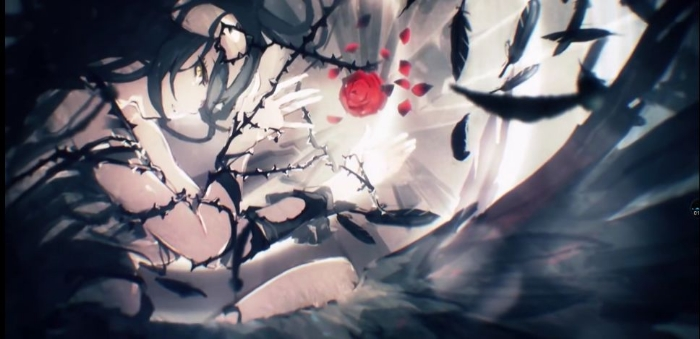

第一章 老倒霉蛋了
四周静悄悄的，城市还在酣睡，天空中弥漫着薄薄的晨雾，对面的酒吧中不时闪烁一两点微光，白纱笼罩着这一派安详的寂景。
地平线处，一缕金光从大地迸出，某个僻静的小巷内也迎来光明，驱散了黑暗。
巷尾靠墙躺着的一个男生艰难睁开眼，阳光点亮了他模糊不清的视野。
棕色眼瞳细的有些喜感，身型偏瘦,肤色稍白，长相也比较俊美，并非男子气概的那种美，而是接近中性美。
他挣扎着想要站起来，却因为身体各处传来的剧痛而以失败告终，经过多次尝试后也没能克服疼痛，便顺其自然。
男生名叫王江，出生在普通的工薪家庭，不久前普通的参加高考，以普通的成绩进入了当地的一所普通大学。
从小到大，他都抱着不好不坏的态度，用不好不坏的方式，不好不坏地生存着。
但这样平庸的人，有一个近乎偏执的兴趣，那就是对动漫的热爱。
他下意识地用中二手势扶正镜框，镜片已经布满裂纹，环视一下四周杂乱的环境，开始回想昨晚发生的事情……
本该晚上九点左右从学校回家的王江，在路过街角的酒吧门口时，见到四个成年男人团团围住一个女孩，嘴里说着些粗鄙的话语。
女生显得十分紧张害怕，但苦于无法突破他们的包围。
偏偏附近没有路人，偷偷拿出手机想要报警的王江，却发现手机恰巧没电关机了。
心中顿时有种万只草泥马呼啸而过的感觉，这不就是漫画里常有的王道场景吗！
没想到自己也有亲身遇到的一天，故事中主角们都能凭借自身强大的力量或超凡的智慧化险为夷，不仅如此，被救的女孩往往还成为了男主的后宫之一。
不过王江清楚知道，现实不是动漫，不是打着正义的旗号就能赢得胜利。
对方四个人，而自己孤立无援，他们身强体壮，自己手无缚鸡之力。
一旦发生冲突，必输无疑，要是普通人大概就会普通地装作没看到吧……
【我很清楚我自己的弱小，我也是最清楚的，自己战胜不了你，但我也必须一战，这不是能不能赢的问题，而是我必须挡在你的身前！】
偏偏这时，他所热爱的漫画场景在他脑海中一幕幕回映……
“放她走，你们这群流氓！”
听到王江的喝斥后，小混混们纷纷回头。
“你特么是哪根葱？也敢坏老子的好事。”
出现了，杂鱼标配的经典台词，通常主角们都会在这个时候瞬间秒杀全场，拯救少女于危难之际。
然而很遗憾，王江就只是一个连杂鱼都不如的咸鱼。
“我…我只是看你们欺负女生不爽而已。”
“哟，这是英雄救美啊，了不得。”
那帮人中带头的老大双手叉腰，眼神凶恶，用高高在上的姿态挖苦他。
“明哥，快看，他的腿在发抖啊。”
“诶哟喂，还真在抖。”
“就你这样的怂包也好意思来惹事？”
说不害怕那是假的，尽管语气上抑制住了，但身体却很诚实。
“天冷，我做做热身运动不行么。”
面对嘲讽，王江故作镇定的回答道，四个人顿时哈哈大笑，见过不要脸的，如此厚颜无耻之人还是第一次见。
“吹牛吹到这水平我只服你。”
“明哥，这种废物别理他，咱们办正事要紧。”
“就是就是。”
“小子，看在你让我们开心的份上懒得和你计较，下次玩英雄救美之前先练练，没本事也能救人？”
在被称为明哥的人打算让他滚蛋的时候，王江则露出了狡黠的冷笑。
“谁说我没能救美了？”
众人发现之前的那个女孩子已经不见了，大概是趁他吸引注意力的时候悄悄逃走了。
“行啊你，居然敢耍老子，那就别怪我们不客气了。”
“不客气？应该的。”
这种做法等于把危险全部推给了帮助她的人，不过并不是不能理解，正常人明哲保身不意外，何况人家是个女孩子呢。
“弟兄们揍他丫的！”
他彻底惹恼了混混们，被其中两人架着带到了旁边的小巷子里，接下来就是承受四个人愤怒的宣泄。
拳打脚踢一次又一次地落在他身上，眼镜也被打飞，多亏双手护住头部，所以伤主要集中在四肢。
一系列的发展都在王江的意料之中，在他的预想中，女孩逃离后应该会马上报警，这样自己即使挨打，用不了多久就会有警察来制止。
然而女孩没有报警，仅仅只是扔下他逃回家了而已。
证明了这一残酷事实的，便是第二天将他从无人角落唤醒的晨光。
“好疼啊～所以说我才讨厌麻烦的现实。”
虽说帮助别人反被抛弃的心情让人难受，他却没有显得太失落。
假如连失败的觉悟都没有，那还不如装作视而不见的路人。
手在上衣摸索了一阵，发现手机和钱包都不见了，有钱至少还能打一辆出租车。
按着隐隐作痛的侧腹，大概是肋骨断了吧，王江垂头丧气地走在街上。
真想回到过去……
“……所以说，是你……！”
“你才……！”
突然在冷清的路上听到好像有人在争吵的的声音，是吵架吗？
真讨厌，他不想和这种事情有牵扯，虽然这样想，脚却直直走往声音的来源方向。
发现像是情侣的三名高中生在吵架，两女一男，穿着学生制服。
其中个子较高的女孩和少年在争执些什么，吵得正厉害，另一名女生介入其中希望他们能够冷静，但正在气头上的两人根本听不进去。
这些家伙真是现充呢，就这样爆炸吧。
他在那瞬间突然注意到，有一辆卡车正高速冲向他们三人，卡车司机趴在方向盘上，是疲劳驾驶。
那三人并没有发现灾难。
“危……危险啊！”
情急之下王江张口大叫，肋骨的疼痛和寒冷的空气刺激着声带，只能没出息地挤出颤抖的声音。
他心想必须去救他们，同时，也觉得何必做那种事情。
可是，如果看到三人被卡车碾过变成血肉模糊的尸体，他一定会后悔没有行动，所以得去救。
十年以上都没好好动过的腿根本不听使唤，剧痛试图阻止他，但他还是迈开脚步，迈开脚步！
跑向他们，成功将两人推出了卡车的前进路线。
[好，还有一个人。]
刚产生这种想法，他就发现卡车已经近在眼前。
被撞到的那一瞬间，背后好像有什么东西亮了一下，那就是传说中的走马灯吗？
因为时间太短所以没弄清楚，实在太快了，意思就是他的人生内容也如此单薄。
=========分割线=============
天使，顾名思义，是来自天空的使者，将神的意志带到下界的桥梁，人世监察者、凡民的忠实记录者。
故事中的天使是纯粹的光明，拥有出众的智慧和强大力量，作为特殊的孩子享受着和神之间的亲密关系，在天上凝望着、爱着、赞美着神。
少女，仿若天使……
少女，仿若魔鬼……
双眼宛如炽焰一样猩红，没有半点污秽的白皙皮肤，包裹这具身躯的是纯白礼服和黑色配饰。
那副美貌是挑不出任何瑕疵的完成品，身材匀称没有半点赘肉，令人无以言表。
生于背后的一对羽翼，其根部犹如水墨般看似濡湿的翅膀，然而那羽毛越是长的靠近外侧，就越是被如雪的纯白所浸染。
要是给这个姿态一个比喻的话……黑与白的交响曲。
所有人都被那个身姿的气势压倒，被吸引着、并且恐惧着。
膝盖颤抖着，无法将脸抬起，也不能向前迈进。
不论是帝国的皇帝、还是反抗阵线领袖、亦或是前任同伴的勇者。
光存在就支配了全场，底下的人们所畏惧的就是那样的王。
威严气场的漩涡之中，举手投足便能压制众人的少女妩媚一笑，像是做出了某种觉悟平淡地吐出三个字。
“动手吧。”
…………
……
“按照约定，由你来杀我。”
“真的要做吗，无论如何都要？”
“按照原计划，全世界的憎恨现在都集中在我身上，接下来只要我消失，仇恨的连锁就会断裂。人类中还会留有勇者这一传说，世界将不再依靠军事力量，而是能聚在一张桌子上商量讨论，这样也就能迎接明天了。”
“这就是……”
“嗯。”
“从神的意志那里我们得知了，人们都渴望着明天。”
“凭自己一人之力无法实现的事，希望得到谁的帮助。”
“愿望……吗？”
“没错，我将向人类施放名为‘愿望’的命令，为了世界的明天。你要成为英雄，成为从全世界的敌人手中救出世界的救世主。”
“这份愿望，我收下了……”
“这对你来说也是惩罚，你将带着正义的面具活下去，不会再变回‘黑’的身份了，还要将普通人的幸福，全部献给世界，永远……”
…………
……
染黑的天使，崭露头角后的数年便将整个世界玩弄于鼓掌之中，傲慢且冷酷，反抗者是什么都好，终归遭到摧毁的结局。
在原人类的可爱少女面前，弱者不被允许站立，就算是强者也当废纸片一样丢弃。
连灭世灾厄都不敢直接对决而避开了，如果她没追上去，那么智慧也不会在历史上延续，这样主张的历史学者并不少。
但是，过强的力量是会招来恐惧。
作为统治者也好，作为敌人也罢，像她一样邪恶的人，一个都没有。
在那没有弱者的时代，为了与她对抗，勇者站了出来，恐怕有史以来这些人类除了现在没有这么团结过。
战场上的花火持续了一天一夜，她放出的能量毁灭了各国倾尽全部组织的武装力量，超过30万精锐的军队 ，有27万人因遭到洗礼而失去了勇气。
只有勇者从未放弃，被希望的力量寄宿着，把剑刺进了尚未失去生命的、巨大之恶的身体。
坚持到最后的英雄们继续发起进攻，哪怕是王也不可能在这种火力下平安生存。
就此，一人统治全世界的历史宣告终结。
…………
……
哗啦~
将少女捆死的锁链一响，男人停止了正在讲述的故事，轻轻合上了手中笔记。
带有翅膀的少女就像古代把人刺死的刑法一样，被绑在巨大柱子上。
双手双脚都被锁链束缚，怎么看都绝无半点逃脱的可能性。
“……？”
垂着头的少女艰难睁开眼睛，连脖子都被锁链覆盖着，即便如此，她也感觉到了少年的接近。
“在那里的是……谁…？”
少女说的是人类的语言，男人也采用了相同的方式回答她。
“还问谁？”
“原来如此，是你啊……神。”
他点点头，默认了这番在常人看来极其荒谬的言论。
“难得你今天愿意主动和我说话，是做了什么好梦吗？”
“是啊，一个很久很久以前，关于家人的梦。”
少女的眼角滑落一滴眼泪，水珠掠过脸颊。
“唉，你本不用忍受这些的，为何却不愿承认错误呢？”
“吾，何错之有。”
“为了将你杀死的那些凡民做到这份上，你后悔吗？”
“对此，吾未曾有过一丝一毫悔意。”
“我知道啦。”
话还没说完，少女又失去了意识垂下头。
“可怜的孩子啊，明明假装一下就好了，哪怕受这无尽折磨也还是要……袒护他们吗？”
这个寂静无人的世界里，从什么都没有的地方凭空抽出长剑，缓慢走向刑罚之姿的少女。
为了避免伤及那对染黑的天使之翼，慎重地确定了下手点，将剑刃挥下。
锁链化作碎片散了一地，羽翼少女得到解放，瘫软无力地倒了下去。
男人把女孩抱起，她轻的惊人，柔软的皮肤也叫人遐思神往。
“再见了，我唯一的孩子。”
